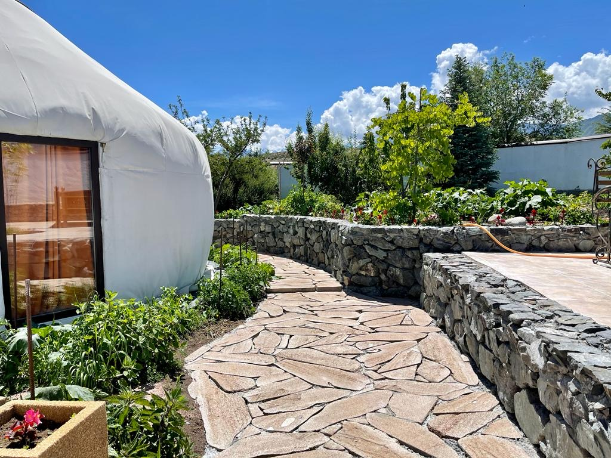
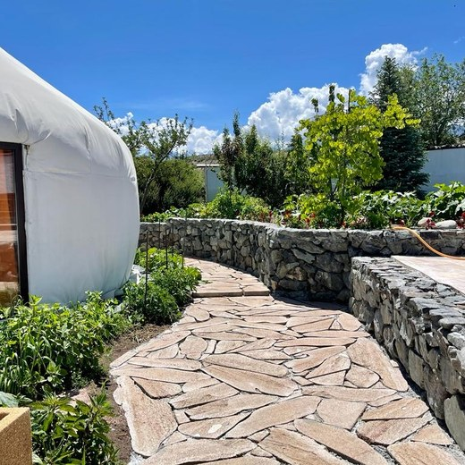
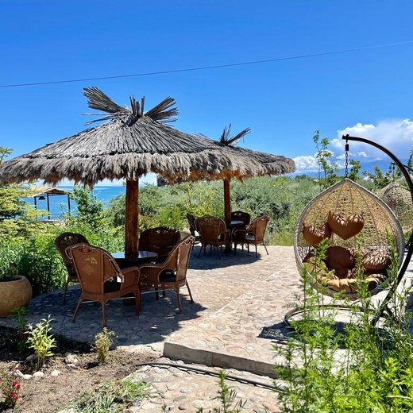
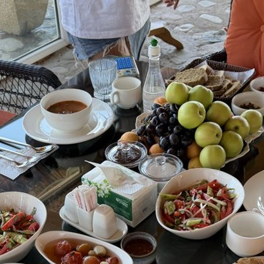
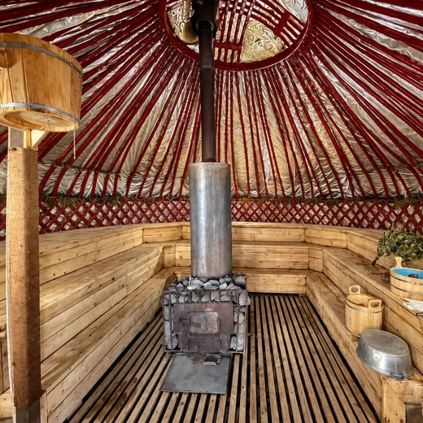

Южный берег Иссык-Куля
Не нужно искать красивые виды — они за дверью юрты
Юрты на самом берегу Иссык-Куля. Баня с чаем из чабреца, домашняя еда и вода в двух шагах от кровати.
Юрты на самом берегу Иссык-Куля. Баня с чаем из чабреца, домашняя еда и вода в двух шагах от кровати.

Место выбрано осознанно: с одной стороны горы, с другой — Иссык-Куль. Рельеф закрывает территорию от суеты, а плотной застройки других пансионатов рядом нет.
Первые десять лет сюда нельзя было просто приехать — только по личному приглашению. Здесь восстанавливался сам Женишбек Назаралиев с семьёй, а вместе с ним — спортсмены, олимпийцы и участники реабилитационных программ. Сейчас двери открыты для всех, а тишина осталась.





Доктор медицинских наук, профессор, основатель Медицинского центра доктора Назаралиева, где уже больше 30 лет занимаются реабилитацией и психическим здоровьем. Много лет изучал духовные и психотерапевтические традиции разных стран.
Первые годы Ак-Тенгир был закрытым пространством — для восстановления самого Назаралиева и его семьи, а также для психотренингов: сюда приезжали спортсмены, в том числе олимпийцы, и участники реабилитационных программ. Попасть можно было только по личному приглашению.
Сегодня историю продолжает его дочь — трансперсональный психолог и гипнотерапевт, которая выросла на этой земле и с детства перенимала методы отца.
Юрты и дом у самой воды, баня «всё включено» и фермерская кухня со своего огорода.
Смотреть размещение →Баня с предбанником и чаем из чабреца доступна даже без проживания — заезжайте, чтобы выдохнуть.
Про баню →Стеклянное бунгало для практик, костровая зона из валунов и уединение с природой — для тех, кому нужно вернуться к себе.
Про ретриты →11 юрт, два пляжных домика и отдельный Premium домик. Работаем круглый год — пока многие лагеря на Иссык-Куле сезонные, мы сейчас дополнительно утепляем юрты и делаем тёплые санузлы.

Классическая войлочная юрта: тюндюк, шырдак на полу, несколько спальных мест. Завтрак включён.

Улучшенный интерьер, больше приватности. Завтрак включён, обед и ужин — отдельно.

Юрта премиум-отделки в паре шагов от воды: резная мебель, панорамный вид на озеро прямо из кровати.

Капитальная постройка в форме юрты — стеклянная дверь, пергола в зелени, собственная терраса.

Баня — внутри настоящей юрты на самом берегу: горячая парная и отдельный предбанник с большими витражными окнами на Иссык-Куль. Особенно красиво на закате.
Предбанник — чай с местным чабрецом, сезонные фрукты, арбуз или сладости. Веники — по запросу. По предварительному запросу можно добавить ритуал с местной белой глиной.
Больше 10 лет для гостей готовит тётя Диля — домашняя выпечка и свежий хлеб каждый день. Огород устроен по принципам пермакультуры — его помогал закладывать специалист из Италии, а часть семян мы заказываем из разных стран. На территории почти 20 лет растут яблони, вишня, черешня и гинкго билоба. Из своих яблок и абрикосов — домашние компоты и смузи.


Сапборды, плетёные кресла в тени и вид на горы — для тех, кто хочет и активности, и просто посидеть с чаем.
Можно с питомцами — мы pet-friendly.
Здесь созданы все условия, чтобы выключить телефон и наконец услышать себя.
Ретриты ведёт наш постоянный практик, а также приглашённые психологи и тренеры — камерными группами. Можно закрыть весь лагерь под одну группу, чтобы участникам никто не мешал.
Организации могут заказать корпоративный ретрит или тимбилдинг — соберём команду психологов и практику по методике Назаралиева.

Костровая зона сложена из крупных природных валунов — здесь проводят вечерние круги, медитации и разговоры у огня.
Село Тосор. Добраться можно на такси, арендованной машине или через InDrive / маршрутку.
Свяжитесь с нами напрямую — ответим быстро